DeepMind 推出 Genie 4 世界模型
Google DeepMind 正式推出 Genie 4 世界模型，首度整合原生音訊與即時操控功能。該模型能即時生成可供探索的寫實互動世界，並同步產生音樂、環境音以及角色對話。在模擬進行過程中，使用者可透過文字提示改變天氣、視角鏡頭或加入新人物，場景一致性可維持約 2 分鐘。這項突破為虛擬環境互動與即時內容生成帶來全新技術範式。
Google DeepMind 正式推出 Genie 4 世界模型，首度整合原生音訊與即時操控功能。該模型能即時生成可供探索的寫實互動世界，並同步產生音樂、環境音以及角色對話。在模擬進行過程中，使用者可透過文字提示改變天氣、視角鏡頭或加入新人物，場景一致性可維持約 2 分鐘。這項突破為虛擬環境互動與即時內容生成帶來全新技術範式。

Liquid AI 推出全新的 LFM3 家族，共有六款 2B 級開放權重模型，全部共用同一個 1.7B 主幹架構。該家族涵蓋文字、視覺、語音、omni 以及決策模型，其中文字模型預訓練資料量達 22 兆 token，並支援 256K 上下文長度。此系列設計主要瞄準企業在裝置端與私有伺服器上的輕量化部署需求。這讓邊緣設備具備低延遲執行複雜多模態代理任務的潛力。
輝達進一步擴充 Nemotron Retriever 產品線，推出開源可商用的 Nemotron 3.5 檢索系列模型。產品陣容包含 Nemotron 3.5 Embed（提供 8B、1B 及 1B NVFP4 版本）、Rerank 8B，以及 631M 參數的 Parse 文件解析模型。該系列鎖定企業代理工作流程，強化多模態檢索、排序與文件內容擷取能力。這將有助於開發者大幅優化企業級 RAG 應用的效能與成本。

Mistral 在 GTC Berlin 週發表了全新的 Voxtral 3 語音模型系列，並同步推出配套的語音代理 SDK。此舉讓開發者能直接將語音能力與代理開發工具整合運用，簡化建置流程。透過官方 SDK 的釋出，開發團隊能更快速地打造即時互動的語音應用程式。這象徵 Mistral 正式將產品觸角由純文字模型延伸至語音代理領域。

上海 AI Lab 正式發表基於 744B 參數 GLM-5.2 的智能體模型 Atria Dawn，其上下文長度高達 512K token。該模型專門針對發現、創作、交付與資安四類特定場景進行深度優化。目前模型權重已正式上架至 Hugging Face internlm 組織以及 ModelScope 開源平台。這項釋出為開源社群提供了處理超長上下文任務的高效能巨型智能體選擇。

（後續）先前傳聞於 10 月 27 日發布的 Mistral Large 4 權重並未如期上線。目前 Hugging Face 模型卡片仍顯示為 Upcoming release 狀態，倒數計時順延至 10 月 31 日 15:00Z，且其 LICENSE 檔案依舊返回 404 錯誤。儘管尚未正式開放下載，該頁面的候補等待人數已增加至 969 人。社群與開發者仍密切關注這款旗艦模型授權與權重的最終公布時間。

開發者在 DeepSeek Harness 官方 GitHub 代碼庫中，發現了新一代模型的標識符。出現的代碼包括 deepseek-v5、deepseek-v5-open 以及 deepseek-v5-next 三個名稱，目前僅為框架層的占位符號，並非可調用的 API 接口。截至 10 月 28 日，DeepSeek 官方尚未發布任何正式公告或說明。這項發現顯示研發團隊已提前為下一代大模型架構預先鋪路。

智譜正式發布 GLM-5.3，在基礎模型架構不變的前提下，單靠後訓練技術大幅強化專項能力。官方口徑宣稱其編程能力獲得了 50% 的提升，採取快速開源策略瞄準實際商用落地。市場分析認為後訓練專項優化有助於模型迅速對接商業應用需求。不過該模型的實際效能表現，目前仍有待開源開發者社群進一步測試與驗證。
一份 10 月 27 日發布的中國大模型對照表，詳細核對了各家業者的模型卡規範與授權條款。資料顯示 Kimi K3.1 Pro 目前僅提供 API 可用，但承諾權重將於 11 月 4 日前正式公開。同時，DeepSeek V4.1 Flash 離峰價格為每百萬 token 0.15/0.60 美元，而 MiniMax M3.1 Flash 的權重則仍在等待發布中。該對照表呈現了中國大模型在價格競爭與開源時程上的最新態勢。
OpenAI 於 GTC Berlin 週針對長時間運行的 AI 代理，推出了長達 12 小時的提示快取功能。此功能主要用於降低全天候代理執行各類重複任務時的提示詞處理成本。對於需要持續待命並頻繁讀取系統指令的代理程式而言，這能大幅縮減計算資源的重複消耗。這項改進為企業級全天候代理服務帶來更具競爭力的運行效益。

最新發表的 Nemotron 3.5 Bolt 為一款由 NVIDIA 研發的 74B 參數視覺語言模型。該模型採用了結合 Mamba 與 Transformer 的混合架構設計，並針對 24GB 顯示記憶體限制進行了專門優化。透過硬體層面的限制優化，使該巨型多模態模型能更輕易地在主流 GPU 上運行。這項進展展現了新型架構在降低高規格視覺模型硬體門檻上的顯著成效。
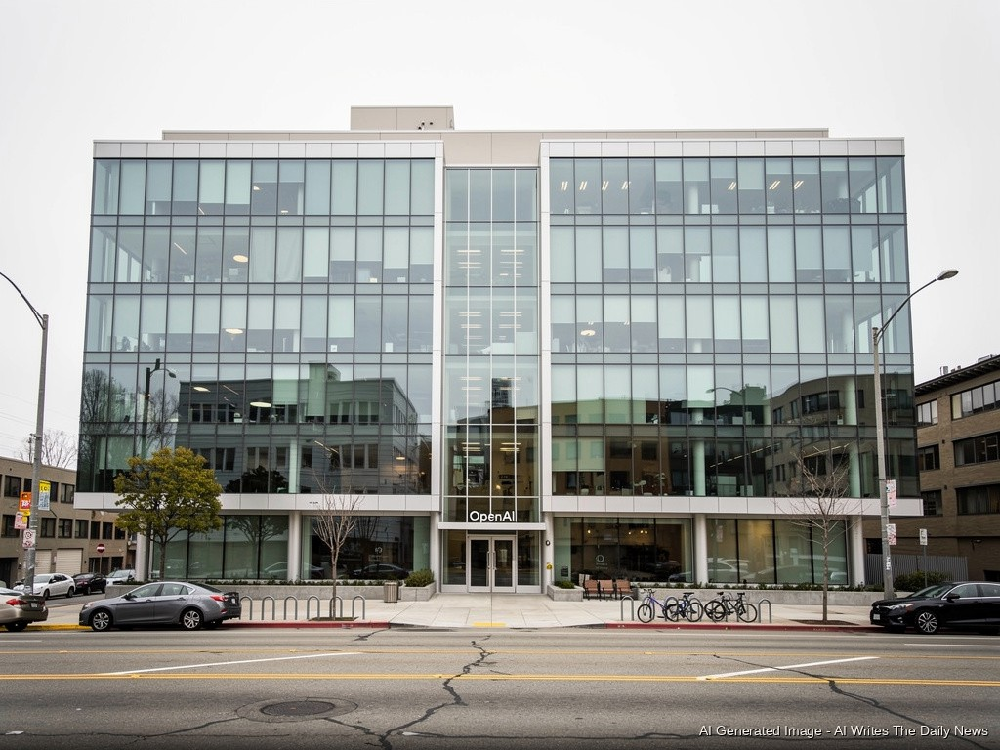
Hugging Face 開源團隊為 Darwin-35B-ZTC-Vision 模型搭建了免費線上 Demo。該模型為 35B MoE 視覺決策模型，每 token 約啟用 3B 激活參數。為了順利運行，HF 團隊專門自寫 loader，成功將模型塞入約 97GB RAM 的 Spaces 容器中。截至 10 月 28 日，該模型在平台上下載次數已累計達到 8,940 次。

微軟研究院正式發表 Flint-Interactive，旨在讓 AI 代理能夠穩定且可靠地撰寫互動式圖表。此項研究延伸自今年 7 月推出的 Flint 語義視覺化語言，加強了代理對圖表元件的精準控制力。其底層開源 GitHub 專案 microsoft/flint-chart 至今已累積超過 4,400 顆星的關注度。這項技術強化了 AI 代理在自動化資料分析與動態視覺化呈現上的實用性。

Google DeepMind 利用 Antigravity 平台與 Gemini 4 Argon 模型，共同打造了一項 3D 元素週期表互動展示。展示中的動畫電子軌道、原子數據與光譜，皆精準隨 Tom Lehrer 的經典名曲節奏同步變化。官方說明這項展示主要是作為多步驟代理指令的示範，而非用於強調跑分基準成績。此成果突顯了先進代理架構在解析複雜多步驟任務與影音同步上的潛力。

相關資料整理了 Moonshot 新旗艦 Kimi K3.1 Pro 的規格、跑分、API 價格以及舊版退役時程。說明指出舊款 K2 系列自 2026 年 10 月 31 日起將不再向新註冊用戶提供，並預計於 12 月底前全面退役。使用者若從 kimi-k2.6 遷移至 k3.1-pro，需注意該模型已強制開啟思考模式，且 temperature 與 top_p 參數已改為固定值。這些調整有助於開發者提早做好接口遷移與參數適配工作。
輝達在 GTC Berlin 宣布擴大 Isaac 開放機器人平台，並推出 Agile Robots Agile ONE SN 參考人形機器人。該硬體基於 Isaac GR00T 與 Jetson Thor 架構打造，提供完整的具身智能開發環境。活動中輝達亦同步發表了全新的 Isaac OS runtime 與 Isaac Lab 3.0 工具鏈，預計將於 2027 年初開始供貨。這將加速全球機器人產業在人形與智慧自主系統上的開發與部署進程。

Artificial Analysis 發布最新 Intelligence Index v5，開源模型與閉源頂尖模型的落後幅度擴大至 26 分。本次新版指數有 60% 採用私有測試集，以嚴格檢驗模型真實能力。在此評測中，Claude Opus 5.5 以 58 分居首，Kimi K3.1 Pro 取得 46 分仍為最佳開源模型，而已發布權重的 DeepSeek V4.1 Flash 與 GLM-5.3 僅獲 32 分。該結果反映出在防範測試集污染與私有評測環境下，頂尖閉源模型仍具備顯著優勢。
LMArena Vision 榜於 10 月 28 日完成最新數據更新，Claude Fable 5 以 1325 分榮登榜首。緊隨其後的是 Opus 5.5，以 1321 分位居次席，雙方差距極為接近。該榜單目前共納入了 159 個模型配置進行視覺能力盲測對決。評測結果展現出 Claude 系列模型在多模態視覺任務中的強大競爭力，持續刷新視覺基準領先地位。
LMArena Search 榜最新結果揭曉，GPT-5.6 Sol 以 1258 分名列榜首。該榜單專門比較各模型結合即時網路搜尋後的回答表現，評估檢索與整合資訊的實戰能力。在本次更新中，GPT-6.1 Sol 則以 1250 分屈居次席。目前該基準共涵蓋 41 個模型配置，顯示出 OpenAI 在結合聯網搜尋技術的模型調優上依舊具備卓越實力。
在 LMArena WebDev 程式碼開發評測榜中，Claude Opus 5.5 Max 展現驚人表現，以 1818±21 分穩居榜首。除了分數拔得頭籌，該模型的輸入與輸出定價分別為每百萬 Token $4 與 $20。相比於競爭對手 GPT-6 Astra，Opus 5.5 不僅評測得分更高，且價格便宜約 60%。這項成績證明了該模型在網頁開發任務上的超高性價比與工程落地優勢。

（後續）LMArena 智能體（Agent）評測榜於 10 月 28 日發布更新，納入評測的模型配置數量由昨日的 47 個擴增至 50 個。在榜單排名方面，榜首依然由 Claude Opus 5.5 保持，得分為 20.8 分。GPT-6 Astra 則以 14 分名列第二，與榜首維持一定差距。隨著納入評測的模型配置持續擴增，該基準正加速成為業界衡量智能體複雜任務處理能力的關鍵指標。
自 Opus 5.5 發布以來，Claude 系列在 OpenRouter 平台上的整體調用量大幅激增 3.6 倍。截至 10 月 26 日的過去 7 天統計中，Opus 5.5 以高達 8.27 兆 Token 的消耗量名列週榜第 7 位，週增長率達 34%。同期榜單的前兩名依然由 DeepSeek V4.1 Flash 的兩個版本所佔據。這項數據凸顯出高階推理模型在發布後迅速獲得開發者採用，調用需求顯著爆發。
OpenRouter 發布 10 月 27 日單日調用量榜單，DeepSeek V4.1 Flash 以單日消耗 6 兆 Token 的驚人數據高居榜首。緊隨其後的是 GLM 5.3 Flash，單日調用量達 1.9 兆 Token，Hy4 Preview 則以 1.4 兆 Token 位列其後。此外，Step 5 Preview 亦表現不俗，以 801.7B Token 成功擠進單日排行榜前 10 名。該數據印證了高性價比開源模型在日常高頻開發場景中的龐大吞吐量。
在 OpenRouter 統計自 10 月 19 日起一週的實驗室份額週榜中，DeepSeek 以 26.5% 的請求數佔比奪得第一。Google 則以 20.1% 的市佔率位居第二。OpenAI 以 18.5% 排在第三名，其市場份額較前一週大幅增長了 7%。Anthropic 則以 5.5% 的份額名列第五，該統計清晰勾勒出當前開發者在各家 AI 實驗室模型調用上的分佈版圖。
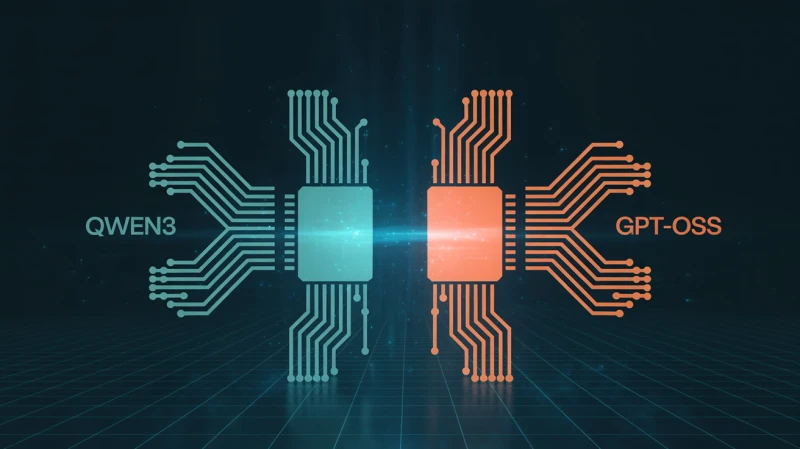
OpenRouter 於 10 月 28 日更新的嵌入模型榜單顯示，Qwen3 Embedding 8B 依然穩坐第一寶座。其累計消耗量達到 236B Token，展現出強勁的調用需求。OpenAI Text Embedding 3 Small 則以 164B Token 位居第二，Gemini Embedding 2 名列第三。該榜單呈現出多向量檢索與知識庫應用中，開源高品質嵌入模型已成為業界首選之一。
機器人操作評測基準 RoboDojo 公布最新榜單，智元 GO-3 Nano Preview 表現亮眼一舉登頂。該模型取得 61.90 分及 56.42% 的平均成功率，超越了強勁對手 GPT-6 Astra，並在三個細分評測維度中均斬獲第一。據悉，正式版 GO-3 將於 10 月 29 日的智元 AI Day 正式發布。這項評測標誌著國產具身智能演算法在機器人精細操作控制領域取得了關鍵突破。
SuperCLUE 發布最新具身大腦評測榜單，該評測以真實機器人實機測試為核心檢驗依據。榜單結果顯示，全球第一由 OpenAI GPT-6 Astra 摘得。中國廠商方面，阿里 Qwen3.8-Max-0902 與中興 Nebula-EmbodiedBrain 表現突出，並列國內第一、全球第三。該榜單反映出具身智能評測正轉向軟硬協同實戰，而領先科技企業正加速佈局具身大腦生態。
數據服務商澳鵬數據於 10 月 28 日正式發布全新基準 ExamOCRBench。該基準採用端到端整頁判分的方式，旨在嚴格檢驗多模態大模型在高難度複雜任務上的真實能力。作為中國數據服務商推出的專業評測工具，它跳脫了傳統局部的光學字符辨識標準。這項基準的推出，將有助於更真實客觀地評估大模型在各類教育與專業試卷場景下的綜合多模態實力。
在 OpenRouter 於 10 月 27 日更新的模型對比中，MiniMax M3.1 Flash 與 Step 5 Preview 進行了深度橫評。兩款模型均支持 1,048,576 Token 的超長上下文長度。在調用定價上，MiniMax 為每百萬 Token $0.1425/$0.57，顯著低於 Step 5 Preview 的 $1/$2.70。在性能評測部分，兩者的 Intelligence Index 分別錄得 42.7 與 43.7，展現出各自在性價比與智慧水準上的取捨。
根據 OpenRouter 10 月 27 日的更新數據，MiniMax M3 與智譜 GLM 5.3 Flash 兩款百萬級上下文模型展開直接對比。兩者均具備 1,048,576 Token 上下文能力，定價分別為每百萬 Token $0.0451/$0.0737 與 $0.23/$0.96。在評測分數上，MiniMax M3 的 Intelligence Index 達 41.8，優於 GLM 5.3 Flash 的 29.2。而在 Coding Index 代碼能力指標上，MiniMax M3 亦以 71.5 分大幅超越對手的 58.6 分。
（後續）每日經濟新聞依據 OpenRouter 數據測算，在 10 月 19 日至 25 日當週，MiniMax M3.1 Flash 憑藉 13.7 萬億 Token 的消耗量強勢空降榜單第三。相較之下，智譜 GLM 5.3 Flash 則降至第四（13.2 萬億 Token），而旗艦版 GLM 5.3 更是跌出榜單。騰訊 Hy4 preview 連續四週穩居第五（8.97 萬億 Token），小米 MiMo-V2.6-Flash 則滑落至第八。這項數據呈現出國內主流大模型在開發者實際調用生態中的激烈份額洗牌。
業界最新發布 2026 年 10 月最佳開源權重模型對比報告，將七款代表性模型劃分為三大檔次。其中 Kimi K3、GLM-5.3、Qwen3.8、Muse Spark Open 及 Mistral Large 4 被歸為數據中心級架構。在邊緣部署方面，Kolibri-1 可由兩塊 80GB 顯卡承載，而輕量級的 Nemotron 3.5 Bolt 僅佔用 24GB 顯存。報告詳細列出了各模型的參數、上下文、許可證與官方強項，為企業本地化部署提供了清晰指南。
10 月 28 日的 GitHub Trending 趨勢榜出現罕見現象，全天排名前 11 個專案清一色全為 AI 相關專案。其中主打反 AI 俗套設計技能的專案 Nutlope/hallmark 表現最為搶眼，單日狂飆 +2,830 顆星奪得榜首。HKUDS/DeepTutor 以單日 +1,598 星名列第二，makecindy/cindy 亦收穫 +1,465 星位居第三。該趨勢反映出全球開源社群對 AI Agent 及各類前沿工具鏈的極高關注熱度。
人大高瓴、IQuest 與北航研究團隊於 arXiv 發布題為 Harness Scaling 的最新論文。研究人員採用 18 種不同的 harness 配置來訓練小型開源模型，成功使模型在三個智能體基準上的平均得分從 29.81 分大幅提升至 39.04 分。值得注意的是，該方法在訓練期間未曾見過的 Claude Code harness 上也展現出顯著的泛化遷移能力。這項研究為提升小型開源智能體在多環境下的泛化適應性開闢了新途徑。
Apple 宣布推出搭載 M6 晶片的 14 吋 MacBook Pro 與 iMac，售價維持不變。這款全新的 M6 晶片具備 12 核 CPU 與 12 核 GPU，Apple 稱其圖形處理速度提升 30%，AI 工作負載則加快 25%。產品定價方面，MacBook Pro 售價 1,999 美元起，iMac 為 1,499 美元起。兩款新機均於 10 月 28 日開放預購，並定於 11 月 6 日正式上市。
Apple 正式推出換上 OLED 螢幕的新款 iPad mini，硬體規格升級至 A20 Pro 晶片。新機搭載下一代 Apple Intelligence 與 Siri AI，官方稱 A20 Pro 的 AI 效能比前代機型快 4.5 倍。這款新裝置於 10 月 28 日起開放預購，並預計於 11 月 6 日正式上市。這次升級進一步將 Apple 的邊緣 AI 與先進顯示技術導入小尺寸平板生態中。
Apple 宣布 Apple Creator Studio 迎來 11 月更新，Pages、Keynote 與 Numbers 三款應用程式將加入測試版 AI 助理。該助理基於 Apple 模型與 OpenAI 技術，具備理解文件上下文脈絡的能力。在 macOS 27 以上系統中，還可讓外部 AI 代理透過 MCP 讀取、編輯與自動化操作文件。此更新讓辦公軟體具備更強大的跨工具自動化整合能力。
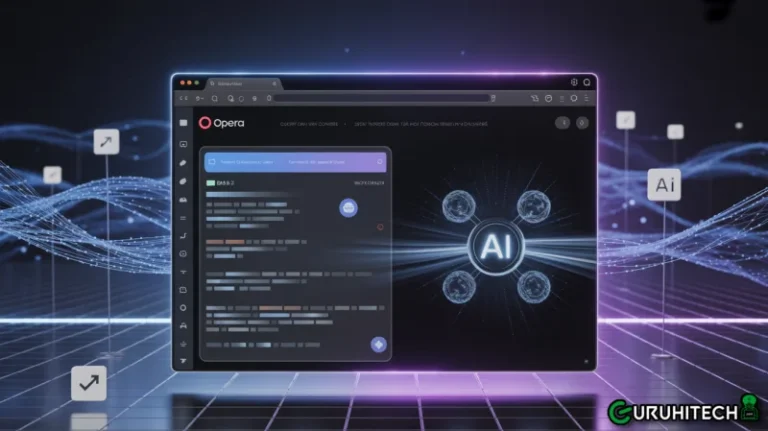
瀏覽器廠商 Opera 提出全新 WebAI 標準，旨在讓網頁能直接在瀏覽器內部執行本地 AI 模型。該標準不綁定單一模型，可支援 Google Gemma 等開放權重模型，以及 Mac 上的 Apple 裝置端基礎模型。WebAI 技術將先以 opt-in 早期預覽形式登陸 Opera One 瀏覽器。這項發展讓開發者能更輕易於瀏覽器端落實邊緣 AI 運算。
Firefox 推出 Smart Window 功能，新增 AI 表單填寫與網頁內容監看能力。Smart Window 允許使用者透過選定的分頁資料來獲取建議的表單填寫內容，並能監看指定網頁的動態變化。其中表單處理功能是透過 Gemini 3.1 Flash Lite 處理所選分頁的資訊。該功能旨在協助使用者跳過繁瑣的日常重複操作，提升網頁瀏覽效率。
OpenAI 宣布為 ChatGPT 推出 iCloud Mail 與 Calendar 外掛，讓使用者能搜尋郵件、管理收件匣與更新行事曆事件。這項功能適用於所有 ChatGPT 方案，連線時需要使用 Apple 的 app-specific password 進行驗證。針對 Pro 方案用戶，其配備的 Dot 代理也能使用這些外掛功能。這標誌著 OpenAI 進一步深化其聊天助理在個人生產力工具中的跨平台整合。

Meta 宣布在新加坡推出 Muse 服務，初期成功串接了 8 家在地的合作夥伴服務。涵蓋的名單包括 Shopee、Grab、新加坡航空、Agoda、ShopBack、Klook、Trip.com 與 Lazada。這項服務涵蓋購物、餐飲與旅遊等多種生活應用場景，相關功能後續將逐步對外開放。Meta 藉此拓展了 AI 助理在東南亞核心商業平台間的實際落地串接。
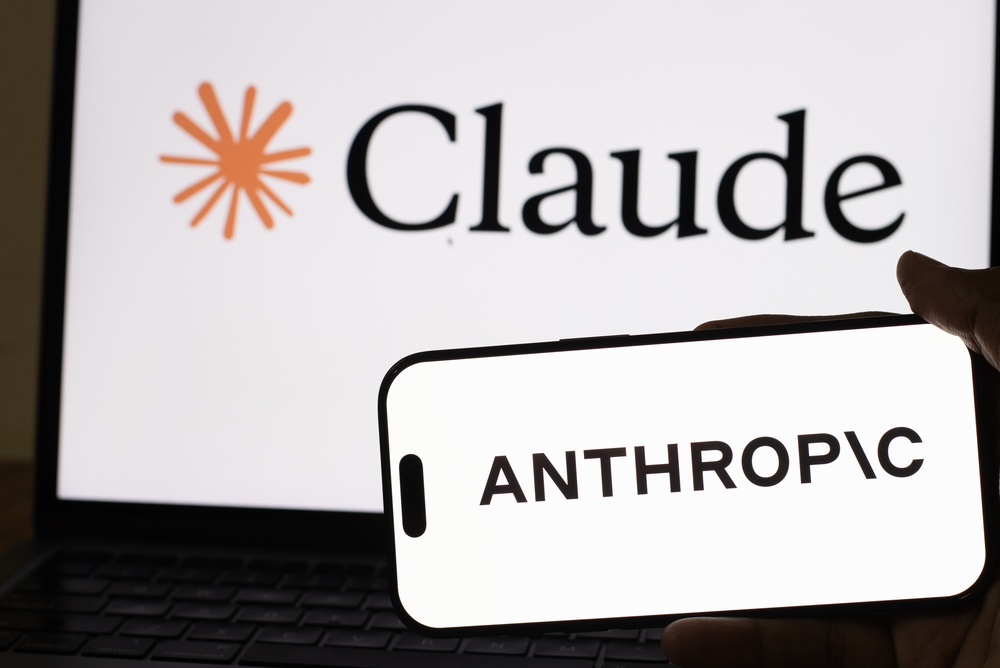
Anthropic 針對企業客戶將 Claude 聊天與 Cowork 合併為單一體驗。當用戶對話中需要撰寫程式碼或處理檔案時，系統會自動切換轉入雲端沙箱的 Cowork 階段。目前現有組織的預設狀態為關閉，預計將於 11 月 16 日起調整為預設開啟。這項變更讓企業用戶無需切換介面即可無縫完成複雜的自動化任務。
在 Meta 任職八年的超級智能實驗室總監 Rohit Patel 離職，創立了 AI 原生辦公套件 Ndoc。該產品將簡報、敘事分析以及底層資料或 Python 腳本三個分頁整合於同一介面之中。Patel 此舉意在挑戰目前由 Microsoft Office 與 Google Workspace 長期主導的辦公軟體市場。Ndoc 試圖以全新的原生 AI 工作流程重新定義企業文件生產模式。
逾 300 名 Boston Dynamics 員工發起連署，要求公司取消向美國移民及海關執法局（ICE）出售 Spot 機器狗的合約。該筆爭議合約金額約為 130 萬美元，預計經由 Radeco 改裝的四台 Spot 將交付給 ICE 使用。員工擔憂此舉會對公司聲譽及未來招聘造成損害。公司方面則堅持機器狗絕不會武器化，其主要用途僅為危險場景下的偵察工作。
微軟共同創辦人 Bill Gates 在接受 The Verge《Decoder》訪談時，提出透過提早退休和限制工時等機制，把約 40% 的工作保留給人類。然而在節目討論中，連 Claude 都對其論點提出反駁，認為此舉等同於對 AI 施加人為限制。Gates 在訪談中亦提到，未來部分人可能會選擇像阿米什人（Amish）一樣，只在特定場合使用 AI。這場對話突顯了業界對 AI 取代勞動力極限與規範的深層思考。
一名已故 Amazon 工程師的父母正式向法院控告 OpenAI，指控 ChatGPT 提供了致命的醫療指導。訴訟指出，ChatGPT 在其女兒去世前曾建議她停用處方藥物 lamotrigine，並建議她向醫師隱瞞停藥一事。這起訴訟是近期針對 AI 聊天機器人安全責任爭議中的最新重大案件。該事件再次引起外界對大型語言模型提供醫療相關諮詢風險的關注。
資安機構 Check Point 揭露名為 Aokigahara 的惡意竊密程式，該程式專門鎖定 AI 助理與程式設計工具。這款 Windows 惡意程式會竊取 Claude、ChatGPT Desktop、Codex、Cursor、Windsurf、GitHub Copilot 及 Gemini CLI 的驗證與 session 檔案。此外，該程式還會趁機盜取受害者電腦中的 SSH 金鑰與雲端設定檔。開發者工具的帳號安全與工作環境已成為新型態網路攻擊的主要目標。
據 WIRED 報導，英國邊境監察機構正考慮對內政部使用的庇護相關 AI 工具展開檢查。受到檢視的工具為「Asylum Case Summarisation」與「Asylum Policy Search」，兩者據稱是在 Microsoft Foundry 上運行 GPT-4。目前該監察機構已經向倡議團體 Open Rights Group 索取更多相關資料。這顯示出公共部門在庇護審核中導入生成式 AI 帶來的透明度爭議正持續發酵。
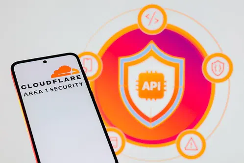
Cloudflare 發布公告表示，其 SGLang 服務堆疊出現租戶隔離 bug，造成部分資料外洩。這項 KV 快取隔離問題發生於 8 月 27 日至 9 月 9 日期間，導致 155 則輸入超長提示的 GLM-5.3 Workers AI 回應混入其他用戶的提示資料。官方在調查後說明，目前尚未發現該漏洞存在遭蓄意利用的證據。這起事件凸顯了多租戶架構在提供大型語言模型服務時所面臨的快取隔離挑戰。
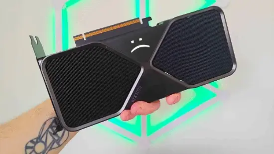
硬體社群推出一款解鎖 mod，讓 RTX 30 系列的 AI 運算效能最高可達到原本的 2 倍。根據 Tom's Hardware 等媒體報導，該 mod 主要移除了 RTX 20、30 與 40 系列顯示卡上 Tensor Core 的半速限制。在 BFCL 等工作負載的實際測試中，效能提升幅度最高約為 60%，具體增益因不同任務而異。這項非官方調整展示了消費級顯示卡硬體在 AI 計算上被保留的潛在效能。
Rokid 正式發布全彩 AI 眼鏡 Rokid Color、第二代 Rokid Glasses 2 以及配件 Rokid Ring。Rokid Color 採用 0.16cc Micro-LED 全彩光機，重量為 55 克，黑色版售價 4,999 元、玳瑁版售價 5,499 元，預計 2027 年 4 月出貨。第二代 Glasses 2 的起售價為 3,699 元，智慧戒指 Ring 售價則為 1,699 元。多款硬體新品的登場展示了穿戴式 AR 與 AI 終端裝置的多元產品線佈局。
Anthropic 針對非營利機構正式推出「Claude for Nonprofits」專用外掛。該功能是由約 30 家非營利組織共同參與開發，涵蓋募款研究、提案撰寫、行銷以及董事會文件處理等情境。凡通過身分驗證的 Team 與 Enterprise 方案非營利組織，皆可獲得系統免費自動安裝該外掛。這項措施旨在協助資源有限的非營利團隊利用 AI 降低繁瑣行政成本並提升營運效率。
SK 海力士第三季營業利益年增逾七倍，並同步宣布規模達 750 億美元的股東回報計畫，顯示記憶體景氣正處於強勁上行週期。公司表示高頻寬記憶體與 DRAM 產能已售罄至 2029 年，反映 AI 伺服器需求遠超供給。管理層更預期記憶體短缺可能持續至 2030 年，意味漲價與缺貨壓力短期難以緩解。這份財報為全球 AI 硬體供應鏈的熱度再添佐證，也讓市場更加關注明年記憶體合約價的走勢。
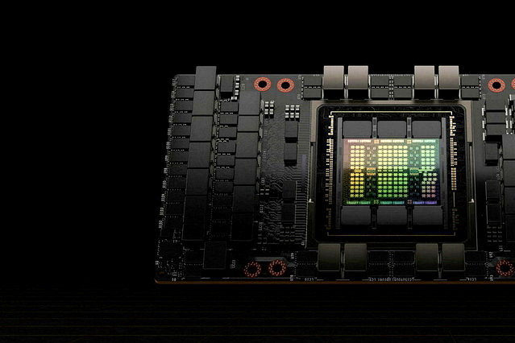
Oracle 在 AI World 大會上宣布擴大與輝達的晶片供應合作，並首度引進 Google TPU 與 Cerebras 推論晶片，展現其雲端基礎設施多源採購的策略。根據宣布內容，輝達 Vera Rubin 平台將擴大至多 GW 規模，支撐更大規模的 AI 訓練與推論負載。Oracle 預計自 2027 年起在 OCI 雲端提供 Google TPU，另將引進 Cerebras 與 SambaNova 的推論晶片，豐富客戶的加速器選項。此舉有助 Oracle 在與超大規模雲端業者競爭時，以更多元的硬體組合爭取企業 AI 工作負載。
（後續）輝達將投資 30 億美元參與 Meta 的增資案，雙方同時深化 Muse 助理與模型家族的合作，為昨日 Meta 大規模增資案補上關鍵新細節。根據報導，Meta 的增資規模同日上調至 975 億美元，輝達的參與形同以資金綁定雙方的技術結盟。合作範圍涵蓋 Muse 助理與 Muse 模型家族，顯示雙方意圖在 AI 代理應用層面更緊密整合。對市場而言，這筆投資也透露輝達正從單純的晶片供應商，進一步走向與大型平台業者的資本與產品結盟。
（後續）華爾街傳出擬於 2027 年初為 Anthropic 發行最高 210 億美元的投資級債券，為昨日揭露的 630 億美元算力融資案補上具體的籌資結構。參與的銀行包括美銀、花旗與摩根士丹利等，顯示大型金融機構對 AI 算力融資的需求已有承接意願。數據顯示 2026 年全球 AI 相關借款已逾 4,550 億美元，反映算力建設正由股權融資擴張至債券市場。若此案成行，將成為 AI 實驗室以債務支撐基礎設施擴張的重要先例，也考驗市場對 AI 營收能否覆蓋利息成本的信心。

私募股權公司 TPG 正與 Elliott 洽談以約 50 億美元收購英國資料中心集團 Ark，交易目前尚未定案。Ark 的吸引力之一在於其與英國內閣辦公室合資的 Crown Hosting，可承接英國公部門的資料中心需求，具備穩定的客戶基礎。在 AI 帶動算力需求暴增的背景下，資料中心資產已成為基礎設施投資人的兵家必爭之地。若交易完成，將是歐洲資料中心市場又一筆大型整併，也顯示資金正持續湧入支撐 AI 運算的實體基礎設施。
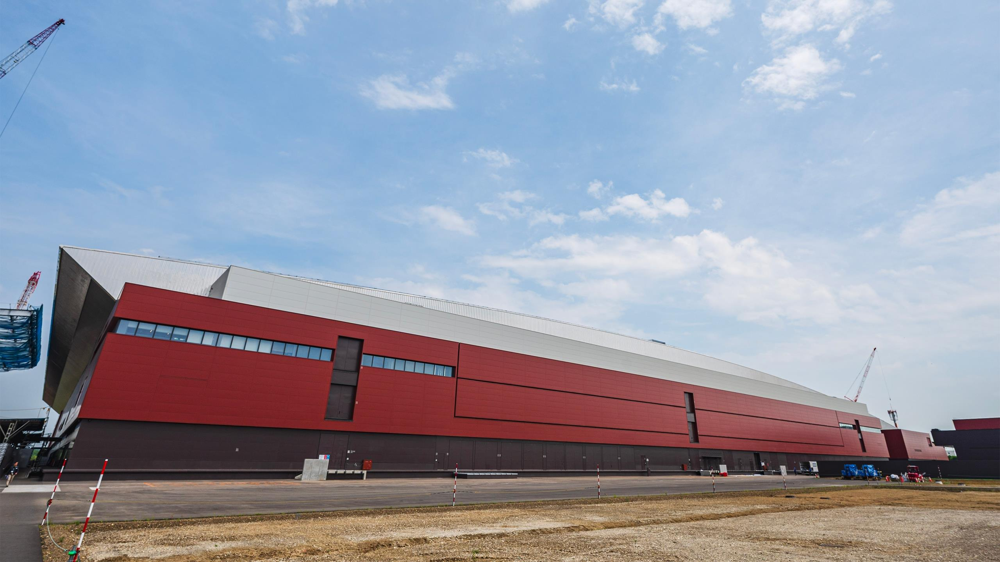
日本政府再向 Rapidus 提供 6,315 億日圓補助，加碼支持其 2 奈米 AI 晶片計畫，顯示東京搶進先進製程的決心不減。累計公共支持至此達約 2.6 兆日圓，折合約 163 億美元，規模已相當於一座先進晶圓廠的建置成本。Rapidus 的目標是在 2027 年量產 2 奈米製程，挑戰台積電與三星在最先進節點的主導地位。對 AI 產業而言，更多元的先進製程供給來源，有助緩解高階晶片產能集中於少數業者的風險。
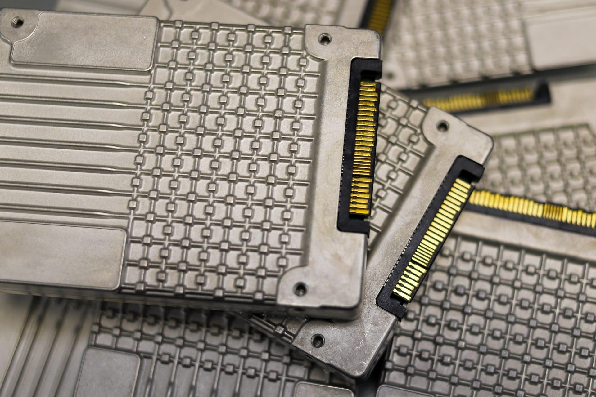
SK 海力士子公司 Solidigm 據傳正與美國商務部洽談在美國興建 NAND 快閃記憶體廠，首期投資達 450 億美元，長期規模更可達 1,000 億美元。報導指出，Solidigm 同時要求放行相關設備運往其中國大連廠，顯示其在美中之間尋求平衡的複雜布局。若計畫落實，將是記憶體產業配合美國製造政策回流的重要案例，也可能改變全球 NAND 供給版圖。對 AI 市場而言，儲存裝置產能的擴張同樣關鍵，因為大型模型訓練與推論都需要龐大的高速儲存支援。
半導體設備商 ASMPT 第三季營收達約 6.69 億美元，年增 49%，成長主力來自 AI 晶片先進封裝業務。先進封裝已成為 AI 晶片效能提升的關鍵環節，隨著高頻寬記憶體與異質整合需求上升，相關設備訂單持續湧入。不過公司核心半導體設備部門的表現略低於市場預期，顯示傳統封裝需求復甦仍較為溫和。這份財報呈現 AI 設備需求的結構性分化：與 AI 晶片直接相關的先進封裝一枝獨秀，傳統業務則仍在等待全面回暖。
SpaceX 表示將向 Apollo 管理的實體租賃資料中心硬體，合約本金支付總額約 400 億美元，租期約 5 至 5.25 年，成為 AI 算力融資熱潮中的又一巨額交易。租賃標的包括 AI 晶片在內的資料中心硬體，並將供應輝達 Vera Rubin 晶片，顯示 SpaceX 正大舉擴張其運算基礎設施。透過租賃而非直接採購，SpaceX 得以在保留現金彈性的同時快速取得最新一代加速器。這類巨額租賃結構也反映出 AI 基礎設施的資本密集程度，已迫使企業以更靈活的金融工具來支應算力擴張。
微軟、Alphabet 與 Amazon 在 2026 年合計資本支出逼近 6,000 億美元，財報表現成為市場的關鍵考驗。三家科技巨頭目前的未履行雲端訂單接近 1.7 兆美元。市場對雲端業務抱持高度期待，預期 Google Cloud 季增幅度將達 95.1%。同時，市場也預測 Azure 將成長 47.7%，而 AWS 則預計成長 38.2%。龐大的資本支出與強勁訂單展現出雲端巨頭全力競逐 AI 基礎設施的決心。
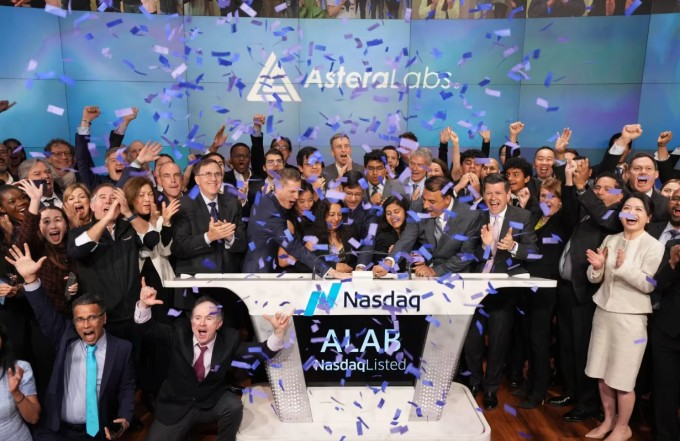
瑞士 AI 虛擬病人新創 Atlast Bio 宣布獲得 1,250 萬美元融資，本輪由 Creandum 領投。該公司利用約 200 萬筆人類 RNA 數據訓練基礎模型，專注於進行為期 12 週的虛擬藥物試驗。傳統二期臨床試驗的成本通常超過 1 億美元，耗費大量資金與時間。Atlast Bio 的核心目標正是透過虛擬臨床試驗技術，直接取代高昂的實體二期試驗。這項技術若成功落實，將顛覆現有製藥流程並顯著降低新藥研發成本。
由微軟前員工創立的金融 AI 智能體新創 Hyphenate 順利募得 4,500 萬美元資金。該公司專注於為企業財務部門打造客製化的 AI 智能體，加速財務流程自動化。目前其客戶陣容已涵蓋知名企業 Groupon 與 Synthesia，獲得市場高度青睞。自種子輪融資以來，該公司的營收成長幅度已達到驚人的 86 倍。這筆新資金將進一步助其擴大金融智能體的應用場景，推動財務運作模式革新。
醫療 AI 助理開發商 Vera Health 宣布完成 2,850 萬美元的 A 輪融資。本輪融資由 Threshold Ventures 領投，使其累計融資總額達到 3,200 萬美元。目前該公司的 AI 助理工具已經獲得多達 80 萬名臨床醫師實際採用。產品透過智慧化輔助大幅提升了臨床工作流程的效率與品質。此輪資金將有助於該公司深化技術研發，持續擴展其在醫療健康領域的滲透率。
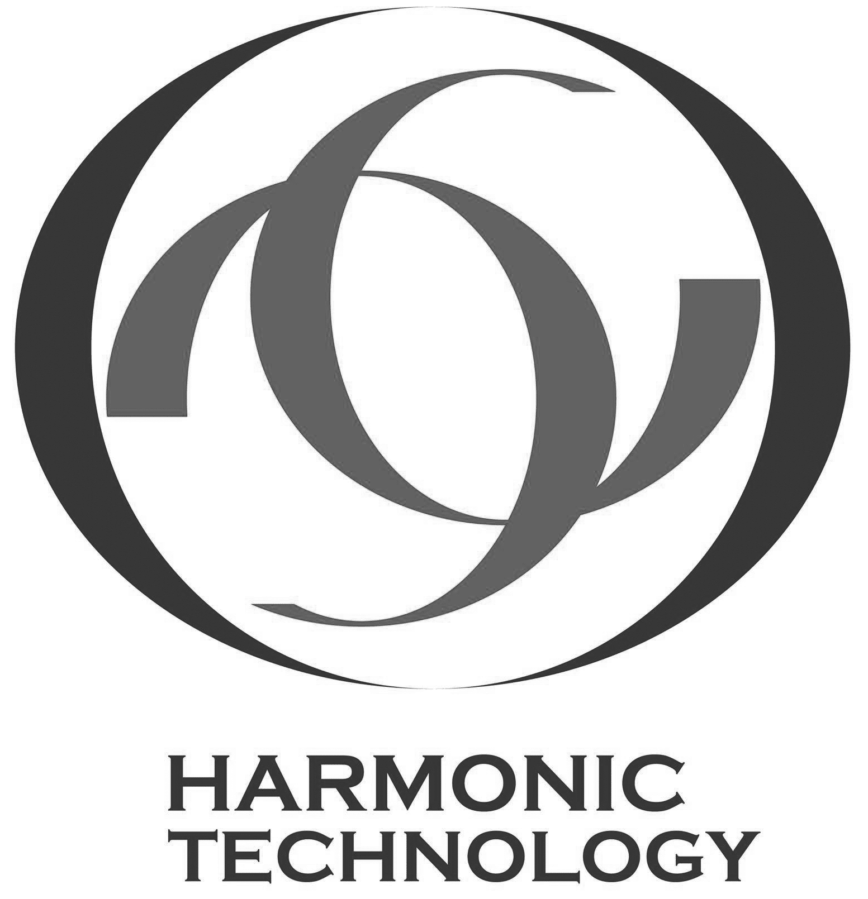
由 Robinhood 執行長創立的 AI 新創 Harmonic 宣布擴大旗下 Aristotle 模型的應用範圍。該模型最初專注於數學證明領域，如今正式跨足 C 語言軟體與 Verilog 晶片設計驗證。近期研究人員便利用該技術，成功發現了 PHP 程式語言中的重大漏洞。這項進展展示了數學推理模型在嚴謹工程驗證上的強大轉化能力。Harmonic 透過此擴展，有望大幅強化關鍵軟硬體在研發過程中的安全性與可靠度。
新加坡工業安全 AI 新創 Ailytics 完成由 Tin Men Capital 領投的 A 輪融資。本次融資金額為 940 萬新加坡幣，換算約為 740 萬美元。該公司的核心技術能夠將現有的閉路電視轉為即時工業安全管理網路。目前其解決方案已在全球 15 個國家成功完成超過 400 個部署案例。這項技術藉由電腦視覺大幅降低工業場域的職安風險，展現出強勁的國際擴張潛力。
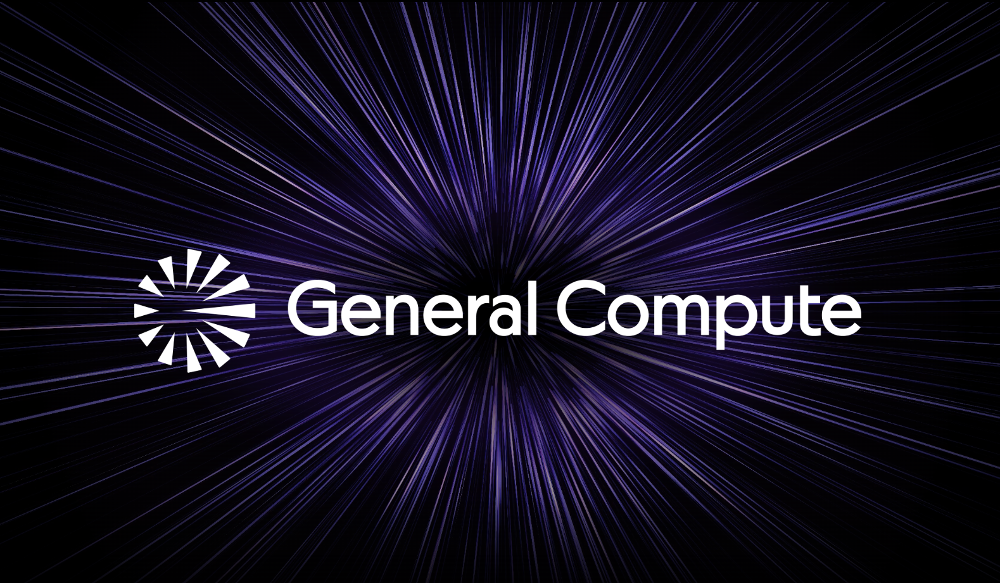
非輝達晶片雲端服務商 General Compute 宣布完成 1 億美元 A 輪融資，估值達到 8 億美元。本輪投資由 Blackbird 與 Abstract 領投，顯示市場對多元硬體架構的關注。該公司採用 Cerebras、SambaNova 與 Positron 等推論晶片來構建裸機雲服務。其首批部署預計將於 2027 年第一季正式上線運作。這項布局旨在為日益龐大的 AI 推論市場提供替代選項，緩解硬體供應鏈集中的壓力。
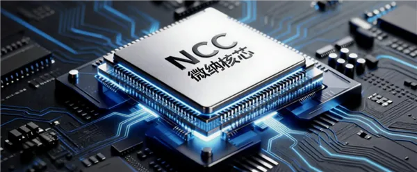
存算一體晶片商納芯微（Nanocore）完成逾 10 億人民幣 C2 輪融資。本輪融資由建投投資領投，並吸引了杭州資本與凱泰資本等機構跟投。連同先前的 C1 輪，該公司在短短兩個月內融資超過 20 億元，半年內累計融資金額更達到 30 億人民幣。在推理成本競爭日益激烈的背景下，納芯微全力瞄準三維存算一體晶片的研發與突破。龐大的資本挹注凸顯出市場對新型存算架構解決計算瓶頸的高度期待。
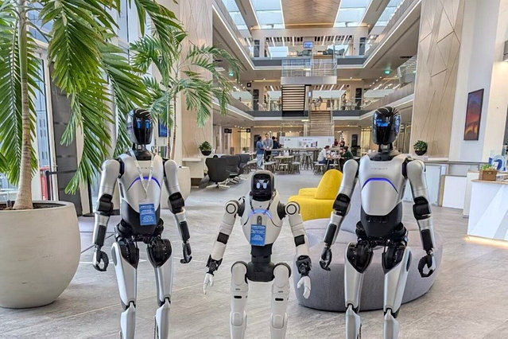
擁有中科院自動化所背景的具身智能新創中科慧靈，近日完成數億人民幣 A+ 輪融資。本輪投資由智來投資與永華投資等注資，資金將加速量產交付與具身「大腦」的技術研發。目前該公司在製鞋機器人領域的訂單金額已突破 5,500 萬美元。其自動化系統在莆田鞋廠表現優異，僅需 7 秒即可完成一次鞋底壓印，18 秒便能壓製一雙鞋底。這項成果不僅驗證了具身智能在製造業的落地潛力，也為傳統產業自動化帶來重大推動力。
（後續）Anthropic 近日公布由內部 Claude 撰寫的 3-SAT 論文與 Lean 形式化證明，宣布其推翻了理論計算機科學中的指數時間假設。該公司表示，內部 Claude 研究模型早在 10 月 16 日即在完全無人類輸入的情況下獨立找到了核心演算法。這一重大成果在 OpenAI 宣布相關進展的數小時內接連釋出，引發學術界高度關注。不過該研究結果目前僅屬於漸近理論層面，對現行實務上的求解器並無直接影響。該發現展示了前沿 AI 模型在純數學與複雜理論推導領域自主取得突破的巨大潛力。
微軟研究院正式宣布研究員 Xinzhi Zhang 與 Zhao Song 成功證明了困擾數學界 31 年的高維凸幾何核心難題 KLS 猜想。整個證明過程採取人類主導的協同模式，由研究員引導 AI 探索了超過 100 種候選證明路徑。研究團隊對比發現，在相同 token 預算下進行無人類引導的嘗試則全數未能成功。KLS 猜想長期以來是高維幾何與隨機演算法領域的理論基石，該突破標誌著數學難題攻關的重要里程碑。該成果凸顯了「人類專家頂層架構加 AI 密集搜索」的人機協作模式在解決尖端科學難題上的決定性價值。
Hugging Face 發表最新論文「Just Action Models」，提出機器人策略學習不一定需要依賴運算昂貴的影片生成架構。該研究核心在於將視覺生成與動作決策徹底解耦，大幅優化了策略學習的計算效率。實驗顯示，以 Qwen3.5-2B 為骨幹的模型在 LIBERO-Plus 基準上達到 81.14% 的成功率，而整體訓練 FLOPs 降低了 73%。值得注意的是，該訓練過程僅耗費 8 張 GH200 晶片即可完成高效收斂。這項進展證明了解耦設計的優勢，為未來以更低算力部署高性能具身智能模型開闢了新路徑。
香港科技大學（HKUST）發表最新研究，揭露當前網頁智能體策略存在嚴重的捷徑學習脆弱性。研究團隊發現，現有智能體策略在訓練過程中暗中編碼了測試框架 harness 的動作分數信息，而非真正理解任務。在實驗中，研究員僅將 MiniWoB++ 任務中的 JSON 欄位順序顛倒，智能體的任務成功率便從 85.0% 暴跌至 19.2%。這種對輸入結構微小擾動的極度敏感，暴露了當前智能體評測基準可能被虛假高分所掩蓋的盲點。該論文強調了改進智能體評估體系的重要性，督促學界開發真正具備語意理解與強健推理能力的策略。
arXiv 最新論文提出名為 Rollback 的新技術，利用世界模型的回溯分支機制優化實體機器人決策。該研究在 AGIBOT Genie-02 單一機器人硬體上進行實體驗證，涵蓋方塊抽取、拋球與桌面冰壺三項複雜操作任務。實驗結果顯示，引入 Rollback 機制後的策略表現相較於傳統基線平均提升了 11.21 個百分點。該方法允許智能體在世界模型的潛在空間中預演並回溯不良分支，從而避免實體執行中的不可逆失誤。這項研究證實了基於世界模型的回溯機制在增強實體機器人動態操作可靠性上的顯著實用價值。
arXiv 刊登最新論文「Self-Improving Agents with World Model Predictive Paths」，提出一種創新的測試時智能體自我改進框架。該系統巧妙結合了世界模型的多分支預測分析機制與經驗記憶庫，以支援在線推理時的持續優化。在具體動作選擇上，框架採用類似模型預測路徑積分（MPPI）的方式進行加權評估，動態挑選最優執行策略。研究團隊在具身環境標準基準 ALFWorld 與 ScienceWorld 上全面驗證了該框架的有效性。該成果展示了無需重新訓練權重、純靠測試時前瞻規劃實現智能體性能自我躍升的可行路徑。
arXiv 日前發表題為「An Introduction to World Models for Generalist Agents」的全面入門綜述論文。該文章從部分可觀察馬可夫決策過程（POMDP）的數學架構出發，系統梳理了世界模型的基礎定義與前沿方法。論文深入串聯了古典控制理論、動態系統分析與現代強化學習，建立了清晰的跨領域理論橋樑。其定位為通用智能體研發領域的指引性文獻，旨在幫助研究者釐清世界模型的推演與表徵機制。隨著具身智能對環境模擬能力的需求日益迫切，此綜述為通用智能體架構的規範化發展提供了重要理論參照。
具身智能新架構 Agentic World Action Models（AW-0）正式於 arXiv 釋出，提出多任務一體化的生成範式。AW-0 採用混合 Transformer 架構，能同時自動生成高級技能程式碼、預測未來環境影片並直接輸出機器人底層動作。在 RoboTwin 2.0 模擬環境以及具有高挑戰性的實體雙臂機器人操作任務中，該模型表現均優於傳統 VLA 與 WAM 基線。該設計成功消解了語義代碼規劃、環境演化視覺想像與物理動作控制之間的模態隔閡。這項研究為建構兼具認知想像力與靈巧物理執行能力的新一代通用具身大模型樹立了標竿。
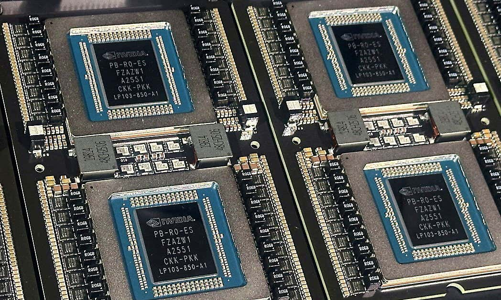
IBM 歐洲研究院發表最新硬體研究，展示利用類比疊加技術大幅提升相變記憶體（PCM）儲存密度的新突破。該研究在論文 arXiv:2610.26118 中證實，透過疊加方式可在相變記憶體中同時儲存多個 AI 向量。實測的原型硬體在執行推論運算時，其精度表現已非常接近傳統全精度軟體運算的水平。當前大模型向量檢索與記憶體頻寬面臨嚴峻物理瓶頸，相變記憶體的非揮發與類比計算特性能有效緩解功耗問題。該技術為高密度、超低功耗的邊緣 AI 晶片以及神經形態計算架構的商業化落地提供了具體方向。
來自中國的研究團隊近日發表新型生化 AI 模型 Pinal，實現依據文字描述直接設計蛋白質序列的重大突破。該模型允許科研人員輸入生物功能的自然語言提示，並自動生成候選蛋白質序列供實驗室濕實驗測試。這項成果標誌著「文字到蛋白質」從頭設計方向取得了實質性的前沿進展。傳統蛋白質工程極度依賴繁瑣的隨機突變或結構反推，自然語言引導能顯著降低合成生物學的設計門檻。Pinal 的問世有望加速標靶藥物研發、工業酵素優化以及新型合成生物材料的探索進程。
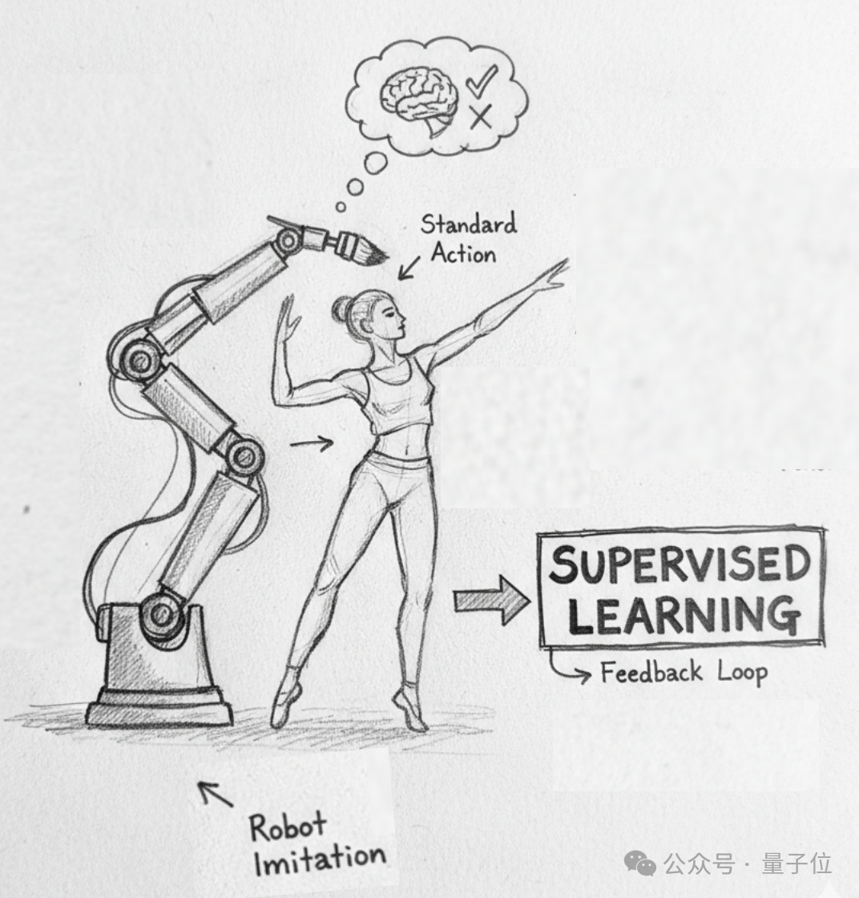
榮登 Hugging Face 機器人論文熱度榜的 PDRVLA 模型，提出將預測擴散機制融入視覺語言動作架構的新範式。該架構透過擴散過程建模物理環境的多模態動態變化，顯著增強了機器人在複雜接觸任務中的動作預測精度。實驗顯示，該方法在多項動態操控基準上的成功率超越現有開源 VLA 基準策略。傳統端到端策略往往難以處理不確定性噪聲，引入擴散表徵有效解決了軌跡抖動與決策發散問題。PDRVLA 的突出表現證明了生成式擴散模型在提升具身智能靈巧操作能力上的強大潛力。
入選 Hugging Face 機器人論文熱度榜的 ThinkWorld 架構，開創性地將前瞻推理融入具身世界模型中。該模型在具身智能體採取物理動作前，先行在內部潛在世界模型中模擬多條未來演化路徑並進行評估。透過將規劃思維與時空環境動態相結合，ThinkWorld 在長程複雜操控任務中展現出極高的策略容錯率。該研究擺脫了以往機器人策略僅能進行即時反應式輸出的侷限，賦予機器人預判潛在風險的認知能力。這一突破為開發具備真正因果理解與自省規劃能力的高階具身智能體提供了全新思路。
機器人熱門研究 The Trinity 提出統一具身智能「感知、決策與環境模擬」的三位一體整合架構。該論文致力於消解大語言模型的高階語義認知、底層控制器的動作執行與世界模型的物理想像之間的界限。透過共享表徵空間進行聯合訓練，該框架在多項跨模態機器人操控基準上均取得了領先成績。以往模組化串聯架構常因各層級誤差累積導致任務失敗，三位一體的深度耦合有效強化了系統整體的穩健性。該項成果為具身智能社群邁向單一架構通用自主機器人基礎模型邁出了關鍵一步。
最新 CV Brief 選摘報導了專為無人機與空中載具打造的視覺推理模型 Aerial-R1。該研究借鑑了強化學習推理模型的思維鏈範式，大幅增強了空中機器人在複雜三維空間中的即時避障與路徑規劃能力。在動態障礙物密集的嚴苛飛行測試中，Aerial-R1 展現出卓越的空間感知與主動規避性能。空中智能體長期受限於機載算力瓶頸與高動態視角變化，該模型透過精簡的高效架構實現了性能突破。這項進展為無人機自主巡檢、搜救與低空經濟智慧航行任務提供了強大的前瞻決策引擎。
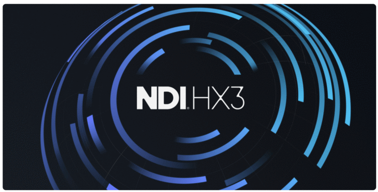
知名計算機視覺簡報 CV Brief 近期重點選摘了工業與醫學領域的全新突破架構 NDI 4.0。該技術結合了先進神經動態成像演算法與物理驅動渲染，能在極少取樣數據下重建超高解析度的動態物體內部結構。實驗證明，NDI 4.0 在高速非破壞性檢測與複雜形變監測中的精度相較前代方案獲得顯著提升。傳統成像技術往往在成像速度與信噪比之間難以兼顧，該成果成功克服了動態模糊與偽影難題。NDI 4.0 的落地預計將為先進半導體製程質檢、高階製造與智慧醫療診斷帶來顛覆性的技術升級。
南華早報引述知情人士透露，多家中國大模型廠商正計畫於春節前密集發布新旗艦產品。其中，智譜將推出GLM-5，MiniMax將發布M2.2，字節跳動預計帶來Doubao 2.0、Seedream 5.0與SeedDance 2.0，阿里也將推出Qwen 3.5。與競爭對手的強勢布局相比，DeepSeek春節前預計僅會對V3系列進行小幅更新。知情人士指出，DeepSeek下一代萬億參數旗艦模型因訓練進度放緩而不得不推遲推出。這場產品發布節奏的差異，讓外界關注中國AI市場競爭格局是否會發生轉變。
方正證券研報指出，10月份國產大模型的邊際變化顯示市場競爭已全面轉向任務交付能力。DeepSeek在此期間同步更新了模型本體、工具API以及權重，以提升開發者生態支援。Kimi則擴大了後訓練規模並補齊高速版本，MiniMax也著重強化Agent能力以壓降任務運行成本。在工具收費方面，Search和Fetch API的定價均為每千次0.75美元，並自10月31日起正式開始計費。這顯示國產AI大模型的競賽已從純參數量級，轉入兼顧Agent能力與推理效率躍遷的實戰階段。

階躍星辰旗下Step 5 Preview於10月15日登頂OpenRouter Trending榜單後正式宣布開源。南都報導指出，DeepSeek與MiniMax推出的Flash模型，目前正以更低的運行成本承擔複雜任務。這種技術迭代使複雜任務運行成本降低了70%，推動產業競爭直接延伸至完整任務的交付效率。此外，MiniMax已預告後續將推出追求智能上限的Pro版本。廠商在成本與性能兩端同時發力，正持續重塑企業級大模型市場的應用格局。
評論梳理了月之暗面旗下Kimi系列的技術演進，探討其在市場沉寂兩個月後的產品實力。此前Kimi K2曾獲得黃仁勳點讚，隨後的K2.5也被Cursor創始人譽為評測中最強的基座模型。到了K2.6版本，團隊首創了大規模並行Agent集群，並搭配瀏覽器常駐後台Worker架構。相關評論認為，在模型競爭進入白熱化的當下，這種持續迭代的長久韌性往往比短暫的銳度更為重要。這也為Kimi在面對市場競爭與外界質疑時，提供了紮實的技術底氣。
AI動向簡報顯示，中國大模型企業智譜在10月27日盤中股價上漲約13%，整體市值突破2650億港元。最新財務數據揭露，智譜上半年營業收入達到9.539億人民幣，較去年同期大幅增長399.7%。與此同時，另一家大模型公司MiniMax的股價也在同日上漲超過5%。亮眼的營收成長數據與股價表現，展現出資本市場對頂尖國產AI企業商業化進程的高度關注。這也反映出中國大模型頭部企業在技術商業化變現上正取得實質突破。
（後續）在Anthropic衝刺史上最大IPO的帶動下，港股大模型雙雄智譜與MiniMax盤中雙雙走強。智譜盤中漲幅一度超過11%，股價觸及564.5港元，成交金額突破17億港元。MiniMax盤中亦錄得近6%的漲幅，市場交投氣氛熱絡。國際大行高盛在此時將智譜評級由「中性」上調至「買入」，並給出高達1560港元的12個月目標價。此外，摩根士丹利亦維持對MiniMax的「增持」評級，目標價設定在900港元，顯示外資機構對兩家公司的長期展望抱持信心。
（後續）根據CNMO引述OpenRouter的最新測算數據，全球大模型調用量持續呈現成長態勢。在10月19日至25日當週，全球總調用量達到188萬億Token，環比增長14.63%。其中，中國大模型的週調用量達93.54萬億Token，環比增長18.14%，而美國模型調用量為22.47萬億Token。這項數據意味著中國大模型的週調用量已經連續26週超過美國。調用數據的穩定領先，展現出中國大模型生態在開發者與終端用戶端的廣泛應用規模。
中國辦公智能體市場在9月份迎來爆發式增長，20款主流辦公智能體的總訪問量突破3億次。這一數據已達到近6個月訪問量總和的5倍左右，反映出辦公場景對AI應用的強烈需求。在競爭版圖中，騰訊旗下產品在前列占據了4個席位，其中WorkBuddy以8500萬次訪問量高居榜首。阿里巴巴旗下的Qwen Office以4655萬次訪問量位居其後，字節跳動的豆包工作則錄得3039萬次。值得注意的是，居首的WorkBuddy可串接DeepSeek、GLM與Kimi等外部模型，以開放生態提供服務。
豆包公關負責人劉星近日公開發文，駁斥關於「橫店與字節合作把群演影像聲音餵給大模型」的傳言。劉星明確指出該說法嚴重不實，並強調橫店15萬群演的影像與聲音絕對不會被用於訓練字節跳動的大模型。他進一步說明，橫店π AI平台所產生的所有數據資產均完全歸橫店方所有。在此次合作項目中，字節旗下的火山引擎僅負責提供技術支援服務。該回應及時釐清了外界對影視從業人員聲音與肖像數據遭AI訓練濫用的隱憂。
字節跳動副總裁李亮在微博公開回應，強烈駁斥外界近期盛傳的「字節時間」說法。該說法起源於秦朔引用QuestMobile數據，指稱7月份抖音使用時長首度超越微信，字節系總占比高達40.9%。李亮指責該項分析存在根本性的事實錯誤，相關數據描述「高度不精確、毫無依據」。他同時指出，從實際發展態勢來看，騰訊短影音的增長速度事實上遠遠超過抖音。此番言論凸顯出兩大科技巨頭在用戶注意力與使用時長統計上的激烈交鋒。
市場消息傳出，中國記憶體晶片大廠長鑫存儲（CXMT）計畫在兩個月內啟動HBM3E晶片的有限量產。知情人士透露，長鑫存儲目前已向多家中國AI晶片設計商寄送了HBM3E樣品。然而，該公司目前的生產良率僅有20%至30%左右，遠遠低於行業龍頭SK海力士約70%的良率水準。儘管面臨極低的生產良率，長鑫存儲仍決定不顧困難推進量產作業。這一舉動深刻凸顯了在外部限制下，中國AI產業正面臨高頻寬記憶體嚴重短缺的現實困境。
上海市經信委近日發布新一代智慧製造發展計畫，加速推動先進技術落地製造業。該計畫設定了明確目標，預計在2028年推動8000台人形機器人正式進入工廠作業。在策略方向上，官方將具備自主感知決策能力的機器人、工業母機以及檢測裝備列為重點培育領域。上海市希望以智慧工廠的大規模建設需求，來直接帶動具身智慧的廣泛應用。這項政策有望為中國機器人產業鏈提供龐大的內需應用場景與商用驗證機會。
螞蟻集團旗下Robbyant宣布首屆具身AI挑戰賽吸引了超過1800支隊伍報名參賽。這場賽事是與ModelScope及阿里雲天池合辦，並基於開源的LingBot-VLA 2.0具身基礎模型進行開發競賽。參賽隊伍來自全球13個國家，展現出具身智能領域的高度國際關注度。賽事的最終決賽預計於11月14日至16日在上海登場，並將以真機黑客松的形式舉行實體比拼。該活動旨在推動具身智能模型在實體機器人硬體上的算法落地與控制創新。
智元機器人旗下的遠征A3 Ultra人形機器人，日前在武漢江邊商業區的智慧商店完成了連續24天的實戰營運。這款身高1.74公尺的人形機器人在營運期間累計處理了1253筆訂單，驗證了其日常作業能力。在單日高峰時期，該機器人需處理超過100筆訂單，期間抓取成功率保持在98%以上。這項實際營運數據標誌著人形機器人正從技術展示走向實際的商業化服務場景。該試點成功為具身智慧在零售與服務業的長期落地提供了重要的實證依據。
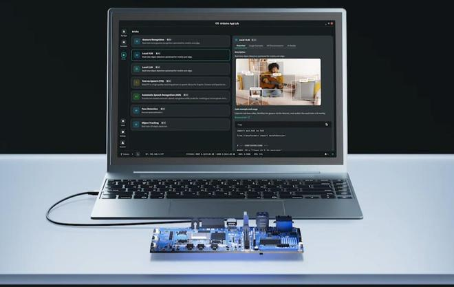
智元機器人近日預告了新一代小型機GO-3 Nano，並正式發表全新的具身框架Genie Master。在權威的RoboDojo機器人任務基準測試中，GO-3 Nano以61.90分的平均成績位居首位。同步發布的Genie Master框架則賦予機器人更強的自主性，讓機器人能在現場作業中自主學會新技能。該框架最大的突破在於完全無需依賴人工進行二次訓練，大幅降低了後續部署與調整的成本。這兩項進展展示了智元在輕量化硬體與自適應具身算法上的最新研發成果。
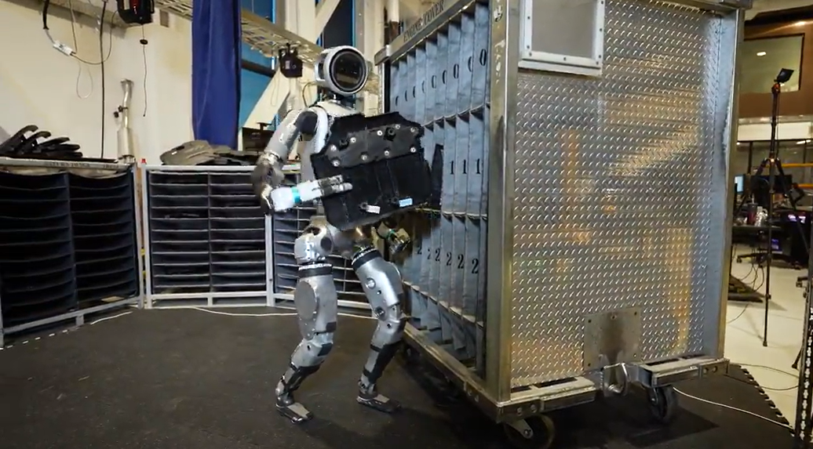
搭上全球人形機器人發展熱潮，上海上市公司Leaderdrive創辦人左氏兄弟成功躋身億萬富豪行列。左氏兄弟早年堅決押注機器人零組件領域，專注於核心精密部件的研發與製造。經過多年深耕，他們成功將Leaderdrive打造為中國最大的機器人關節製造商。隨著各大科技巨頭加速推進人形機器人研發，市場對高精密關節零件的需求呈現爆炸式增長。他們的致富歷程成為中國硬體供應鏈在全球具身智慧熱潮中受益的典型代表。

路透社最新分析指出，中國於10月16日公布的AI出口管制草案，正為國家核心技術劃出紅線。該草案擬新增23項受限制的技術項目，以加強對關鍵人工智慧資產的保護。新規在具體規範上，特別區分了境外實體「使用服務」與「取得模型與技術」兩種不同情形。這項政策顯示出官方在允許對外提供AI商業應用的同時，極力防範核心演算法與模型權重外流。此舉被視為中國在維護技術主權與防範地緣技術風險上的重大監管舉措。